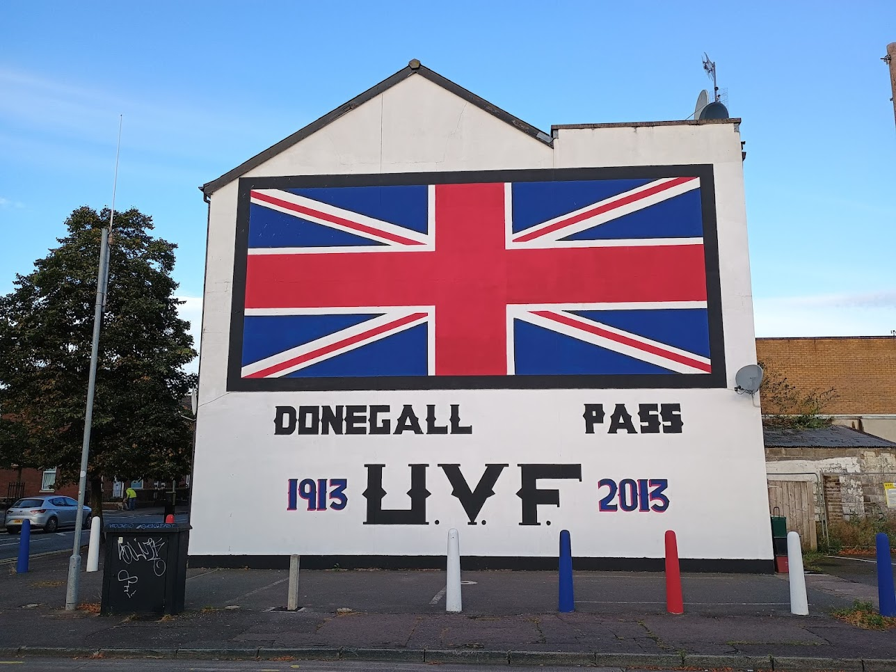

The typography of terror. You have to admire this. The script is perfect; almost fraktur, it is a nod towards a military, German, angularity with a heavy blackness that expresses a bristling, militaristic worldview, while avoiding the obviousiness, the elaborate `design-ness' that would have come with actual frakture.
Donegall Pass is an interesting street, it starts in the new Belfast, Asian groceries, student restaurants, a messy lively place. At the other end it has this gable, some large surface car parks, I imagine people are land-banking and a loyalist bar I saw a marching band standing around outside with pipes, drums and pints.
Republician grafetti often shows an influence of the cl´ Gaelach, the Repubician sacrifice is often individual, martyrs dead for a dream, a story. Loyalist grafetti is about defiance, a community; a fortress. Here we see the bars; letters made of steel.